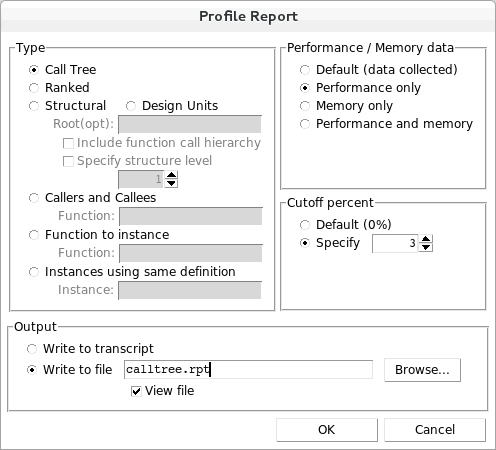
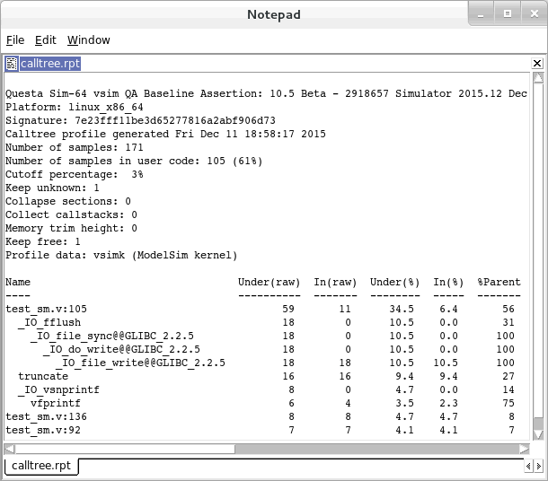

Questa SIM allows you to create
different profile reports based on the profiler data.
Procedure
Create
a call tree type report of the performance profile.- With
the Calltree window open, select from
the menus to open the Profile Report dialog box.
- In the
Profile Report dialog box (Figure 1), select the Call Tree Type.
Figure 1. The Profile Report
Dialog Box
- In the
Performance/Memory data section select Performance
only.
- Specify
the Cutoff percent as 3%.
- Select Write to file and type calltree.rpt in
the file name field.
- View
file is selected by default when you select Write to file. Leave
it selected.
- Click OK.
The calltree.rpt report
file will open automatically in Notepad (Figure 2).
Figure 2. The calltree.rpt Report
You can
also output this report from the command line using the profile report command.
See the Questa SIM Command Reference for details.